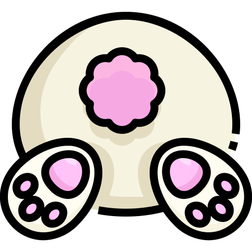

Curiosidades mais peculiares sobre os felinos
Quantos anos em média vive um gato?
Muita gente se pergunta quantos anos vive um gato? Nos dias de hoje, a expectativa de vida de um gato doméstico é de 15 anos, em média.
Porque os gatos gostam de entrar em lugares esquisitos?
A curiosidade sobre a natureza se trata de uma característica nata dos gatos. Adoram explorar territórios, entrar em malas, sacolas, cheirar objetos e pessoas.
Porque o gatos caem em pé?
Os gatos são capazes de mudar de posição no ar, de modo a tocarem as patas no solo antes do impacto no chão. Eles conseguem girar o corpo durante uma queda muito rápida: primeiro a cabeça e os membros anteriores, depois o resto do corpo e membros posteriores. Mas isso não quer dizer que não se machucam quando caem de alturas maiores, sofrendo traumas geralmente em cabeça, tórax e membros.
Os gatos tem apego ao ambiente?
Os gatos são animais de laços e rotinas, e muitos desenvolvem forte apego com o ambiente em que vivem. Mudanças repentinas ou movimentos podem causar estresse nos bichanos, fazendo com que eles levem algum tempo para se adaptar. Por isso, é importante oferecer um local seguro e familiar visando promover o bem-estar emocional e físico do animal.
Porque os gatos dorme muito?
Em média, um gato adulto passa cerca de 12 a 16 horas por dia dormindo. No entanto, essa quantidade pode variar dependendo da idade do felino, saúde e ambiente. Gatos mais jovens e ativos, por exemplo, geralmente dormem um pouco menos, enquanto os mais velhos e menos ativos passam mais tempo dormindo.
Como é a visão dos gatos?
Os gatos conseguem ver mais em ambientes mais difusos, e têm uma visão esférica superior. Mas não conseguem ver a cor tão bem como os humanos. Os cientistas acreditam que os gatos veem a erva em tom vermelho.
Porque no desenhos os gatos sempre tomam leite?
Sobre o leite nos desenhos como Tom & Jerry, sempre vemos o Tom com uma tigela de leite, mas não é um alimento recomendado para dar aos gatos com frequência. Embora o leite não seja tóxico, pode causar irritação no estômago, gases e diarreia.
Curiosidades mais peculiares sobre os cachorros
Cachorros também sonham
Você já observou seu cãozinho enquanto ele dorme? Muitos cachorros podem emitir sons baixinhos, uma espécie de latido ou mexer as patinhas, o focinho e até mudar de posição bruscamente enquanto dormem.
Visão limitada
Além do olfato aguçado, os cães têm uma boa audição e visão adaptada para detectar movimentos. No entanto, sua visão de cores é limitada, enxergando principalmente em tons de azul e amarelo.
Porque giram antes de deitar?
Esse comportamento foi herdado dos ancestrais lobos, e nada mais é do que uma forma de defesa contra predadores. Ao girar, os cachorros conseguem sentir a direção do vento. Assim, eles se deitam na direção contrária e, caso algum outro animal sinta o seu cheiro e se aproxime para atacar, ele já estará em uma posição de frente, de defesa.
Existe uma raça que não saiba latir?
O Basenji, de origem africana, não sabe latir. Ele não chega a ser mudo porque consegue se comunicar por meio de uivos longos e agudos.
Tempo de vida de um cachorro
Em média, cães podem viver entre 10 e 13 anos, podendo variar para mais ou menos de acordo com suas características. Cachorros de grande porte tendem a viver menos devido a uma grande quantidade de radicais livres presentes em seu organismo.
Porque cachorros são sensiveis a barulhos altos?
Como sabemos, cães escutam muito bem. Porém, existem sons que eles não gostam, como fogos de artifício, secadores de cabelo e sirenes. Alguns cães podem até ficar mais tranquilos por costume, no entanto fique sempre atento ao comportamento dele em relação a esses barulhos.

Curiosidades mais peculiares sobre os Hamsters
Hamsters aprendem seu próprio nome
Não. Você não entendeu errado! Este pequeno roedor é muito inteligente, e pode aprender seu próprio nome. Especialistas dizem que basta que ele ouça o apelido com bastante frequência. Se você quiser estimular, fique repetindo o nome de seu amigo próximo a ele. Em breve, ele vai aprender e começar a atender quando for chamado.
Eles adoram um friozinho
Os hamsters são originários de locais frios, como a China e a Mongólia. Por isso, eles adoram temperaturas baixas e não se dão bem em locais muito quentes. Portanto, evite que seu amigo fique exposto ao sol, principalmente durante o verão. Além disso, deixe a casinha de hamster longe de fontes de calor, como aquecedores e outros eletrodomésticos.
Eles são um pouco cegos
Os olhos pretos dos hamsters podem ser fofos, mas eles não são muito bons para enxergar. Estudos mostram que a visão desses roedores é bem ruim, e muitas vezes eles utilizam os bigodes para se orientar.
Quanto tempo em média vive um Hamster?
Com os cuidados certos, seu amigo roedor poderá viver de dois a três anos, sendo sempre uma ótima companhia. Por essa razão, é importante saber como cuidar de um hamster. Porque, afinal, eles dependem de uma alimentação equilibrada, ambiente limpo e higienizado, além muitos outros cuidados.
Porque eles enchem a bochecha de comida?
As bochechas dos hamsters são muito fofas, além de serem uma das características que tornam ele tão encantador. Mas saiba que tanta fofura não é à toa. As bochechas, na verdade, são espaços dedicados a armazenar comida! Se você convive com um hamster, provavelmente já observou eles se encherem de comida, ficando bem bochechudos, certo? Esse é um comportamento muito comum, pois é uma forma de guardar comida para depois ou levar alimento para sua família.
Curiosidades mais peculiares sobre os Coelhos
São independentes em relação à higiene
Coelhos se mostram bastante independentes em relação à sua higiene e não apreciam ambientes sujos. Eles se limpam sozinhos, assim como os gatos. Banhos não são recomendados e podem ser prejudiciais, exceto em casos de sujeira excessiva. Nesses casos, recomenda-se usar água morna e produtos específicos.
Coelhos comem as próprias fezes
Parte do material fecal que produzem é conhecido como “cecotrofos”, ingeridos assim que depositados, já que ainda existem nutrientes que podem ser aproveitados pelos coelhos. Por isso, é comum que os vejamos comer as próprias fezes.
Dentes de coelho nunca param de crescer
Apesar de não serem considerados roedores e sim lagomorfos, coelhos compartilham essa característica que dependem do ato de roer. Por isso mesmo, seus dentes precisam ser continuamente desgastados com a ajuda de uma alimentação apropriada e de brinquedos para evitar problemas de saúde.
Como são os olhos e a visão do coelho?
Sua visão periférica chega a quase 360º. Isso significa que você nunca vai conseguir chegar de surpresa até ele. Os olhos de coelho possuem um único ponto cego, na frente de seu nariz. Porém, isso não é um problema para o dentuço, já que ele possui uma infinidade de pelos táteis nessa região. Por se tratar de uma presa, a visão do coelho é excelente. Ele enxerga bem tanto de dia quanto à noite e tem perfeita noção de profundidade e distância, necessárias para ver um predador se aproximando.
Quais cores o coelho enxerga?
Sabemos que esses animais enxergam diferentes tons porque eles possuem as células responsáveis por captar cores nos olhos, que são os cones. Os humanos possuem três variedades desses cones, já os coelhos, somente duas. Isso significa que eles enxergam com uma paleta mais reduzida de cores do que nós. E quais cores os coelhos enxergam? Acredita-se que eles vejam verde, azul e suas variações.

Curiosidades mais peculiares sobre os Porquinhos da Índia
Conseguem se comunicar
Esses pequenos se comunicam por diversos meios, os quais têm diferentes significados, por exemplo: se cumprimentam ao tocarem o nariz, podem fingir de mortos caso haja presença de predadores e até pedem atenção através da emissão de sons.
Comem as próprias fezes
São cecofágicos ou cecotrófagos, ou seja, são animais que apresentam o hábito fisiológico de ingerirem suas próprias fezes. Os cecotrofos (fezes), ao serem excretados, voltam a ser ingeridos, passando novamente por todo o processo digestivo, mas desta vez com um maior índice de digestibilidade dos alimentos, permitindo um maior aproveitamento nutritivo deles. Caso essa prática seja interrompida, perdem peso, digerem menos fibras e eliminam mais minerais.
Não adquira um casal
Ao contrário do que se pensa, o ideal não é adquirir um casal para fazerem companhia, pois acabam por passar mais tempo separados do que juntos devido as crias em sequência. As fêmeas são capazes de engravidar logo após o parto.
Crescem muito rápido
Outra curiosidade sobre os porquinhos-da-índia é que eles são animais de crescimento muito rápido. Durante as primeiras semanas de vida eles ganham até 50 gramas por semana, o que é bastante notável considerando o pequeno tamanho destes animais. Depois disso, o crescimento desacelera. Mas quando o porquinho-da-índia para de crescer? Usualmente, ele atinge o tamanho adulto aos 14-15 meses de idade.
Podem dormir com os olhos abertos
Uma curiosidade sobre os porquinhos-da-índia bastante interessante diz respeito ao seu sono: apesar de terem pálpebras móveis que lhes permitem fechar os olhos, muitos porquinhos- da-índia dormem com os olhos abertos. Alguns o fazem com regularidade, outros apenas esporadicamente. Este é simplesmente um mecanismo de defesa que eles desenvolveram para serem capazes de agir rapidamente em qualquer situação de risco, mesmo quando estão dormindo.
Vive quanto tempo em média?
O Porquinho da India vive em média de 5 a 8 anos, isso varia bastante de acordo com os cuidados oferecidos a ele.